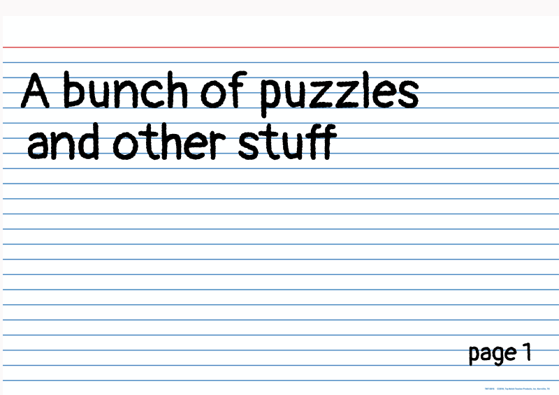

0 | Intr0duction
I was going to come up with some narrative for this puzzle but to be quite honest I can't think of one. I also should come up with more puzzles before I do this. Maybe when I find more time (but really I have essentially infinite time now) I'll update this page to use some cool rad technologies. So here's a bunch (one, for now) of static pages with puzzles. They're all on index cards because yay for having a theme. Let's go.
